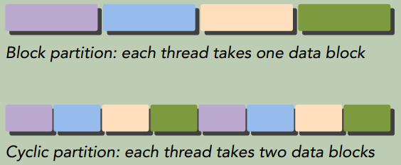
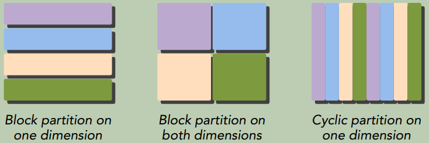
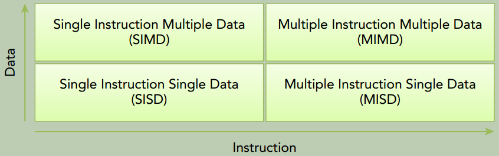
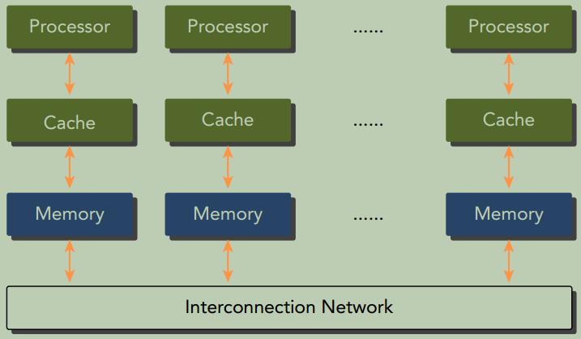
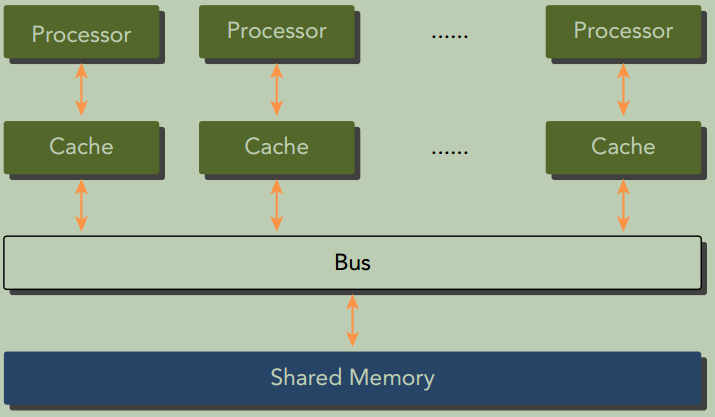
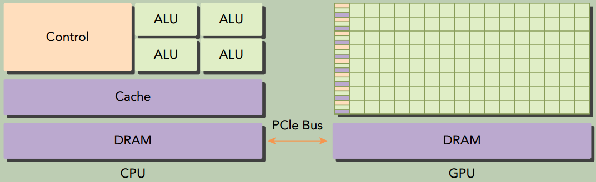
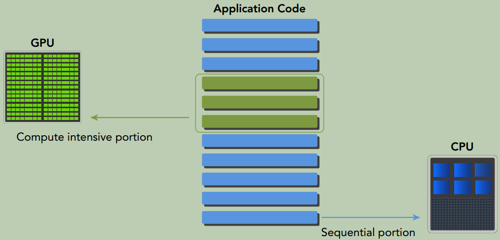

一、基于CUDA的异构并行编程
并行计算
并行计算的主要目标是提高计算速度。并行计算的软件和硬件层面是紧密联系的，传说中的软硬件协同。并行计算通常涉及两个不同的计算技术领域：
- 计算机架构（硬件方面），关注的是在结构层次上支持并行性。
- 并行程序设计（软件方面），关注的是充分使用架构的计算能力来并发地解决问题。
并行性
在并行算法的实现中， 分析数据的相关性是最基本的内容， 因为相关性是限制并行性的一个主要因素。
在应用程序中有两种基本的并行类型：
- 任务并行。重点在于利用多核系统对任务进行分配。
- 数据并行。重点在于利用多核系统对数据进行分配。
数据并行程序设计的第一步是依据线程划分数据， 以使每个线程处理一部分数据。有两种方法可以对数据进行划分：
- 块划分：一组连续的数据被分到一个块内。 每个数据块以任意次序被安排给一个线程， 线程通常在同一时间只处理一个数据块
- 周期划分：更少的数据被分到一个块内。 相邻的线程处理相邻的数据块， 每个线程可以处理多个数据块。 为一个待处理的线程选择一个新的块， 就意味着要跳过和现有线程一样多的数据块。


程序性能通常对块的大小比较敏感。 块划分与周期划分中划分方式的选择与计算机架构有密切关系。
计算机架构
根据指令和数据进入CPU的方式
弗林分类法(Flynn’s Taxonomy) 根据指令和数据进入CPU的方式，将计算机架构分为4种不同的类型：

相关衡量指标：
- 延迟，一个操作从开始到完成所需要的时间，单位常用
us表示。 - 带宽，单位时间内可处理的数据量， 通常表示为
MB/s或GB/s。 - 吞吐量，单位时间内成功处理的运算数量， 通常表示为
gflops（即每秒十亿次浮点运算）
根据内存组织形式
根据内存组织形式，计算机架构可分为两种类型：
分布式内存的多节点系统
如下图所示，每个处理器有自己的本地内存， 处理器之间可以通过网络进行通信。也被称为集群。

共享内存的多处理器系统
包含的处理器数量通常从两个到几十个或几百个处理器之间。 这些处理器要么是与同一个物理内存相关联（如下图所示） ， 要么共用一个低延迟的链路（比如PCIe）。

众核（many-core） 通常是指有很多核心（几十或几百个） 的多核架构。GPU代表了一种众核架构， 几乎包括了前文描述的所有并行结构： 多线程、MIMD（多指令多数据） 、 SIMD（单指令多数据） ， 以及指令级并行。 NVIDIA称这种架构为SIMT（单指令多线程）。
CPU core VS GPU core
- CPU核心较重， 用来处理非常复杂的控制逻辑， 以优化串行程序执行。
- GPU核心较轻， 用于优化具有简单控制逻辑的数据并行任务， 注重并行程序的吞吐量。
异构计算
CPU和GPU是两种独立的处理器， 它们通过单个计算节点中的PCI-Express总线相连。从同构系统到异构系统的转变是高性能计算史上的一个里程碑。
尽管异构系统比传统的高性能计算系统有更大的优势， 但目前对这种系统的有效利用受限于应用程序设计复杂度的增加。
异构架构
GPU不是一个独立运行的平台而是CPU的协处理器。 因此， GPU必须通过PCIe总线与基于CPU的主机相连来进行操作。

一个异构应用包括两个部分：
- 主机代码，在CPU上运行
- 设备代码，在GPU上运行
异构平台上执行的应用通常由CPU初始化。在设备端加载计算密集型任务之前，CPU代码负责管理设备端的环境、代码和数据。
因为CPU和GPU的功能互补性（CPU计算适合处理控制密集型任务， GPU计算适合处理包含数据并行的计算密集型任务）导致了CPU＋GPU的异构并行计算架构的发展，这两种处理器的类型能使应用程序获得最佳的运行效果。
因此，为获得最佳性能，你可以同时使用CPU和GPU来执行你的应用程序， 在CPU上执行串行部分或任务并行部分， 在GPU上执行数据密集型并行部分。

CPU 线程 VS. GPU线程
- CPU上的线程通常是重量级的实体。 操作系统必须交替启用或关闭线程以提供多线程处理功能。上下文的切换缓慢且开销大。
- GPU上的线程是高度轻量级的。一个典型的系统中会有成千上万的线程排队等待工作。如果GPU必须等待一组线程执行结束，那它只要调用另一组线程执行其他任务即可。
CUDA C编程
一个典型的CUDA编程结构包括5个主要步骤：
- 分配GPU内存。
- 从CPU内存中拷贝数据到GPU内存。
- 调用CUDA内核函数来完成程序指定的运算。
- 将数据从GPU拷回CPU内存。
- 释放GPU内存空间。
1
2
3
4
5
6
7
8
9
10
11
12
13
14
15
16
17
18
#include <stdio.h>
//__global__告诉编译器这个函数将会从CPU中调用，然后在GPU上执行
__global__ void helloFromGPU(void)
{
// 通过内置变量threadIdx.x来实现只让thread 5调用printf
if (threadIdx.x == 5) {
printf("Hello World from GPU thread %d!\n", threadIdx.x);
}
}
int main(void)
{
printf("Hello World from CPU!\n");
helloFromGPU<<<1, 10>>>();
cudaDeviceReset(); // 用来显式地释放和清空当前进程中与当前设备有关的所有资源。
return 0;
}
GPU上调用printf, cudaDeviceReset 会强制将printf的内容从GPU flush 到host侧，然后在用户命令行里显示出来。如果不调用cudaDeviceReset或其他可以强制flush GPU输出的接口，比如cudaDeviceSynchronize，printf的内容不保证会显示出来。
cudaDeviceSynchronize会阻塞主机端线程的运行直到设备端所有的请求任务都结束。
数据局部性
数据局部性指的是数据重用， 以降低内存访问的延迟。 数据局部性有两种基本类型。
- 时间局部性是指在相对较短的时间段内数据和/或资源的重用。
- 空间局部性是指在相对较接近的存储空间内数据元素的重用。